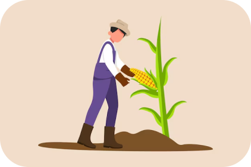
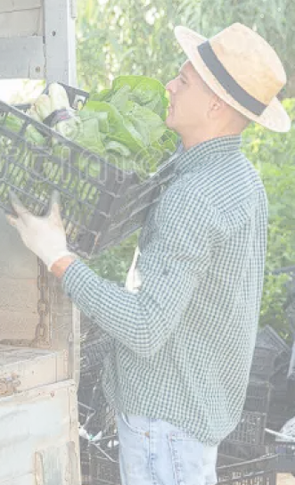
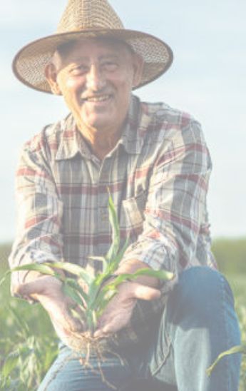

Conectamos directamente a pequeños productores con mercados mayoristas y transportistas de manera simple y directa.
Productores activos
Transportistas
Satisfacción de usuarios
Somos una empresa tecnológica peruana enfocada en brindar soluciones innovadoras para el sector agrícola.

El 87% de nuestros usuarios se sintieron cómodos usando Agrodirecto
Trabajamos con más de 1200 productores
y más de 340 transportistas

"Antes de AgroDirecto, perdía casi la mitad de mi ganancia pagando un flete yo sola para mi cosecha de papa. Ahora, la app me avisa cuando un vecino tiene espacio en su camión y compartimos el gasto. ¡En mi último envío ahorré un 30% y el trato fue directo!"
